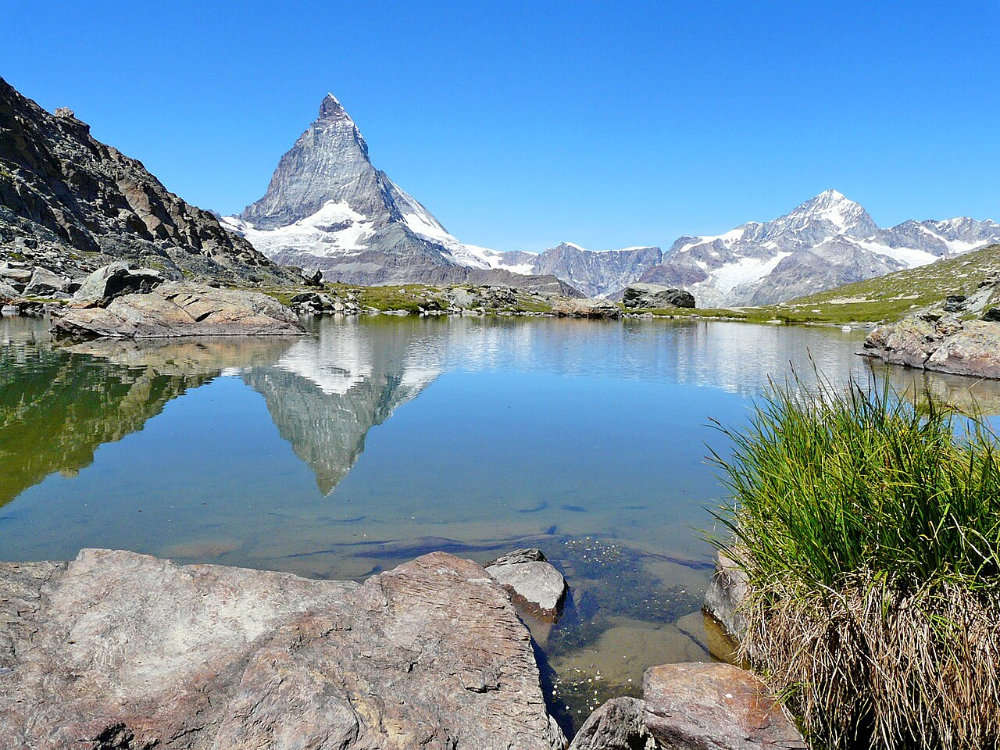
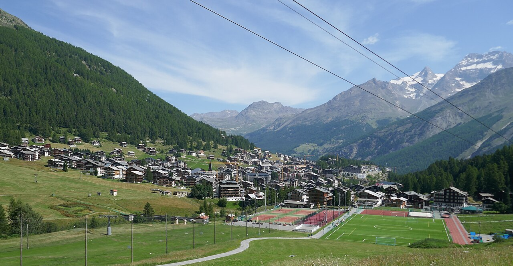
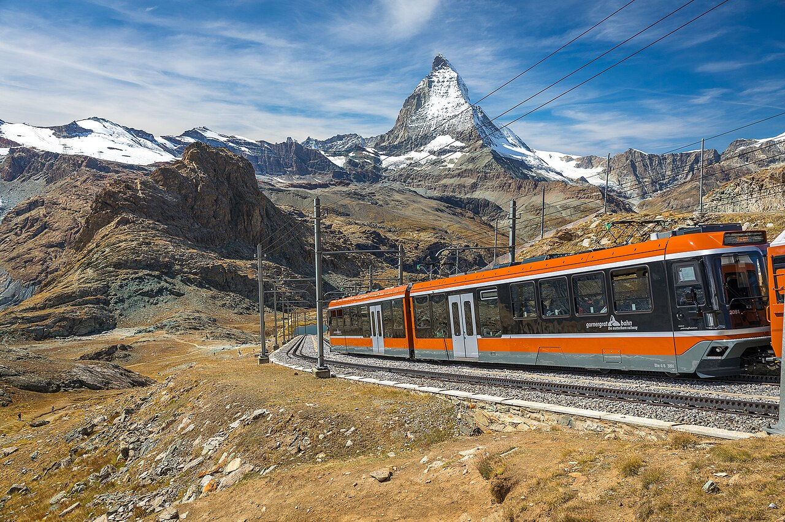
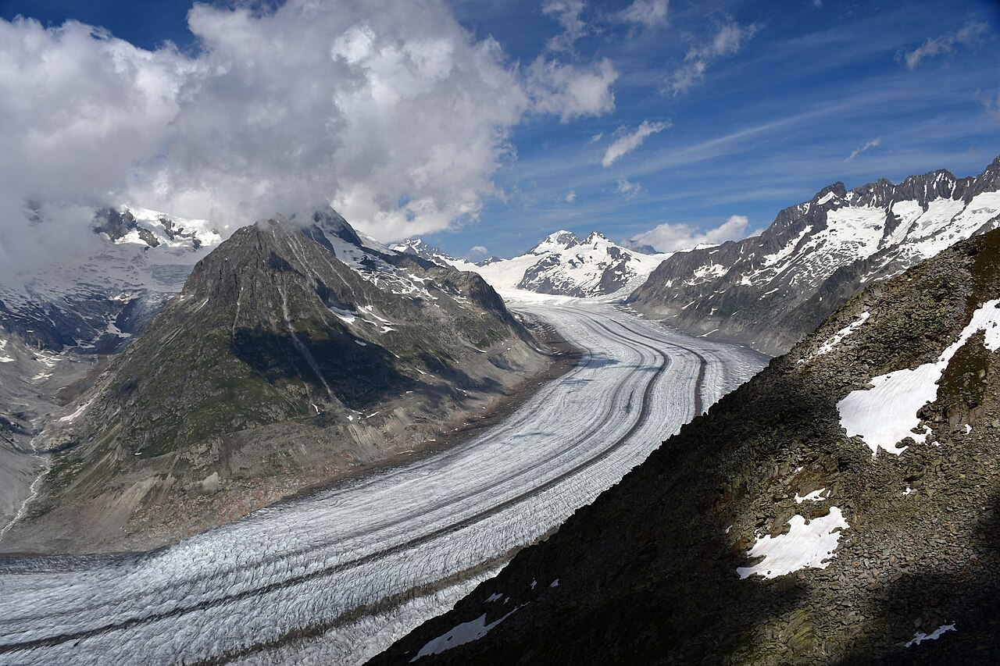
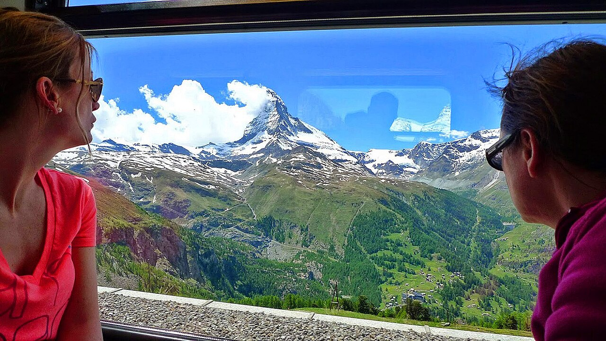
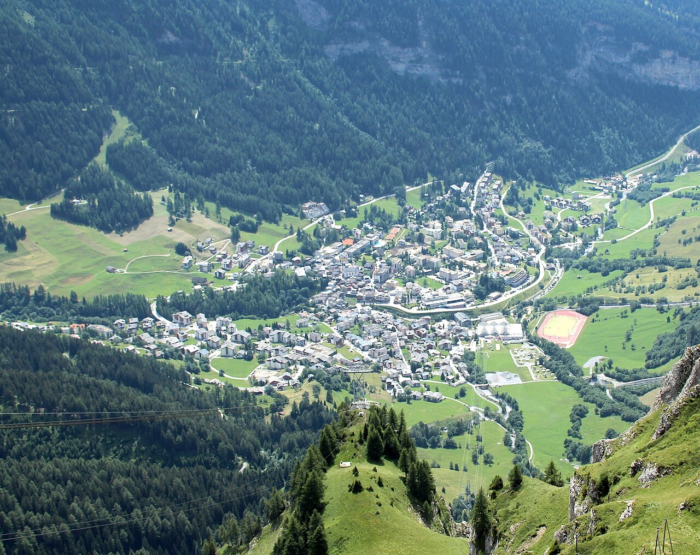

Day1
To the glacier village
Langenfeld → Basel → Bern → Visp → bus to Saas-Fee (≈ 7 h). Collect your SaastalCard at check-in.

The Matterhorn, the longest glacier in the Alps and a car-free glacier village where your guest card makes all summer lifts free.
High trails (Five Lakes Walk, Aletsch ridge) are usually snow-free from mid or late June.
Keep 1–2 days flexible and save the big mountain days for clear weather.
Langenfeld → Basel → Bern → Visp → bus to Saas-Fee (≈ 7 h). Collect your SaastalCard at check-in.
Spielboden & Längfluh lifts (free) for close-up glacier views. Feed the marmots at Spielboden. Walk down via the glacier trail.
Saas-Grund → Kreuzboden → Hohsaas (3,200 m, free): the '18 four-thousanders' view trail. Afternoon: Kapellenweg chapel path to Saas-Fee.
Bus to the Mattmark lake (2,200 m) and walk around the turquoise reservoir, or take the Heidbodme lift and do the Almagell high trail.
Bus + train to Täsch (≈ 1 h). Afternoon in Zermatt village and the Gornerschlucht gorge.
Gornergrat cog railway (CHF 132, or CHF 66 with Half Fare). Walk down via Rotenboden → Riffelsee → Riffelberg for the reflection shot.
Täsch → Visp → Mörel → cable car to car-free Riederalp (≈ 1.5 h). Walk through the ancient Aletsch forest.
Moosfluh → panoramic trail along the glacier edge → Bettmerhorn or Eggishorn: the longest glacier in the Alps right below you.
Day trip to Leukerbad (≈ 1.5 h): open-air thermal pools facing 1,000 m cliffs, plus the Gemmi pass cable car.
Brig → Bern → Basel → Köln (≈ 6.5 h).





With 5 people, a holiday apartment with a kitchen is almost always cheapest. Book with free cancellation now and re-check prices later.
A Swiss Youth Hostel with an indoor pool and spa. Holiday flats for 5 in Täsch and Riederalp/Bettmeralp.
≈ CHF 50–65 pp/nightSaas-Grund is cheaper than Saas-Fee and still gets the SaastalCard.
≈ CHF 80–110 pp/nightOne of the highest hotels in the Alps: Matterhorn sunset and a sky full of stars.
≈ CHF 200+ ppLangenfeld → Köln → Basel → Bern → Visp (≈ 6 h), then the PostBus up the Saas valley. DB sells Sparpreis Europa tickets to Visp/Brig. Home from Brig.
A Swiss Half Fare Card (CHF 150, 1 month) is best here, because the Saas lifts are free anyway. Expect ≈ CHF 190 more in half-price tickets (Gornergrat, Aletsch lifts, Leukerbad, transfers). The Swiss Travel Pass would cost more for this route.
CHF per person for the whole trip, sharing everything between 5. 'Budget' = hostels/campsites and cooking. 'Comfort' = apartments/3★ hotels and more meals out.
| Item | Budget | Comfort |
|---|---|---|
| Train Langenfeld ⇄ Valais | 100 | 150 |
| Half Fare Card + tickets | 340 | 380 |
| Lifts & entries (Saas lifts free!) | 45 | 160 |
| Accommodation (9 nights) | 495 | 855 |
| Food | 380 | 700 |
| Buffer | 60 | 100 |
| Total (CHF) | 1 420 | 2 345 |
€ at 1 CHF ≈ €1.07. 2026 prices; Swiss fares rise ≈ 3–4 % from Dec 2026. Splurges are listed separately.
Today is late October 2026. See the overview page for the full timeline.